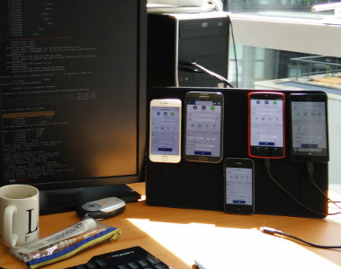

Depuis le mercredi 20 mai, mappy.com propose un site unique et responsive pour tous les navigateurs (bureau, tablette ou mobile).
En effet, auparavant, les sites fr.mappy.com, fr-be.mappy.com, nl-be.mappy.com et en.mappy.com étaient dédiés aux navigateurs de bureau et m.mappy.com aux navigateurs mobiles et tablettes. Ce billet a pour but de présenter le contexte et notre parcours vers cette orientation.
Historiquement 2 sites
Mappy a mis en ligne mobile il y a plus de 5 ans. D’abord via des technologies de type BkRender (pour les téléphones très limités de l’époque), le site a évolué à plusieurs reprises vers une version "HTML5" incorporant une base commune de code avec le site principal (notamment backbone et l’API de cartographie Mappy).
Réflexion autour du Responsive
Nos principales motivations au passage à un site responsive étaient :
- d’arrêter le double développement d’User-Stories à la fois sur le site fixe et mobile (et, ainsi, de livrer les futures User-Stories sur tous les supports),
- l’annonce de Google favorisant les sites "mobile-friendly" alors que le site mobile était fermé aux robots,
- le fait de n’avoir qu’une unique base de code, afin de simplifier le développement de nouvelles fonctionnalités et la maintenance,
- d’offrir une version mobile pour les versions étrangères.
Le passage à un site responsive soulève néanmoins quelques points de vigilance quant au processus actuel :
- chaque fonctionnalité doit être testée sur plus de support qu’auparavant,
- lors de la conception, certains points doivent être pris en compte (conception sur petit et grand écran, gestion du touch, image en haute définition, etc).
Enfin, certaines fonctionnalités sont différentes entre le site fixe et le site mobile. L’itinéraire sur mobile par exemple, présente un écran affichant le sommaire de la feuille de route, écran inexistant sur la version fixe.
Une preuve de concept a alors été réalisée pour déterminer la faisabilité technique d’un site reponsive. Cette preuve de concept a démontré qu’un résultat satisfaisant pouvait être atteint à un coût acceptable (environ 2 itérations de développement).
Implémentation
"Responsive client" ou "dynamic server" ?
L’implémentation peut s’effectuer de 2 façons, éventuellement complémentaires :
- l’approche "responsive client" : le même code est envoyé par le serveur à tous les navigateurs, qu’ils soient mobiles ou non, et l’affichage des éléments graphiques est conditionné par des
media queriesCSS et des comportements différents éventuellement conditionnés par du code JavaScript ; - l’approche "dynamic server" : un contenu HTML, CSS et JS différent est envoyé à chaque client en fonction du
User-Agent.
L’approche "dynamic server" a l’avantage de pouvoir servir un contenu allégé de façon bien plus simple qu’avec l’approche côté cliente (notamment pour les images). Cependant, elle a l’énorme inconvénient de servir un contenu différent en fonction du User-Agent, une pratique dangereuse en cas de reverse-proxy (à moins d’ajouter un entête Vary: User-Agent qui rend l’utilisation d’un reverse-proxy caduque). Enfin, certains navigateurs se disent iPhone, Android et Windows Phone comme c’est le cas pour Windows Phone 8.1 ce qui rend la tâche complexe.
L’approche "responsive client", préconisée par les recommandations SEO de Google, n’a pas ces inconvénients puisque le même contenu est servi à tous. Par contre, il est plus difficile de charger un contenu allégé en fonction du navigateur.
CSS
L’implémentation du site responsive s’effectue principalement via des "CSS media queries" afin d’afficher ou masquer des éléments ou les ré-arranger en fonction de la taille d’écran :
Site grand écran
Site petit écran
Page d’accueil / écran de résultats / affichage d’un POI ou un itinéraire
3 points de rupture principaux ont été définis pour :
- les petits écrans (par exemple les téléphones en portrait/paysage et tablette en portrait),
- les écrans moyens (par exemple les tablettes en mode paysage),
- et enfin les grands écrans (toutes les plus grandes définitions) où certains contenus sont plus aérés (taille des éléments, marge entre la barre gauche et la carte et le bord de l’écran, etc).
Un point de détail, depuis le passage au responsive, notre vocabulaire a changé puisque nous parlons de petit ou grand écran plutôt que de fixe et mobile.
Optimisations graphiques
À la manière de Font Awesome, une grande partie de nos icônes (catégories de commerce, outils de la carte, etc) utilise une police de caractère spéciale les aggrégeant. Cela permet de s’abstraire d’une version normale et haute densité de pixel ("retina"). Cette technique se limite toutefois à des icônes d’une seule couleur donc nous conservons encore quelques sprites.
JavaScript
Certains cas minoritaires nécessitent l’utilisation de JavaScript pour adapter le comportement à la cible (notamment le choix des emplacements publicitaires à afficher ou les différences de comportement comme le cas du sommaire de la feuille de route évoqué plus haut).
Néanmoins, la majorité des cas ne concerne que des adaptations au niveau des CSS.
Tests
Afin d’avoir un feedback rapide lors de nos développements mais également pour faciliter les tests manuels, nous avons opté pour quelques supports physiques de téléphones ou tablettes de type devicelab couplé à GhostLab :

Enfin, nos tests Selenium sont en cours d’évolution puisque nous comptons maintenent les lancer sous 2 formats (grand et petit écran).
Conclusion
Le passage au site "responsive" s’est passé sans accroc.
Le travail a porté ses fruits, notamment sur 2 points :
- l’impact SEO suite à la mise en ligne du site reponsive a été largement positif avec une progression entre 20 et 30 % (également lié à la suppression du message d’avertissement dans les pages de résultats Google indiquant que le site n’était pas adapté au mobile suite au blocage des robots sur ce même domaine),
- l’unification du code simplifie le développement et allège les processus au quotidien (moins de livrables, moins d’environnements, moins de projets dont des briques communes, etc).